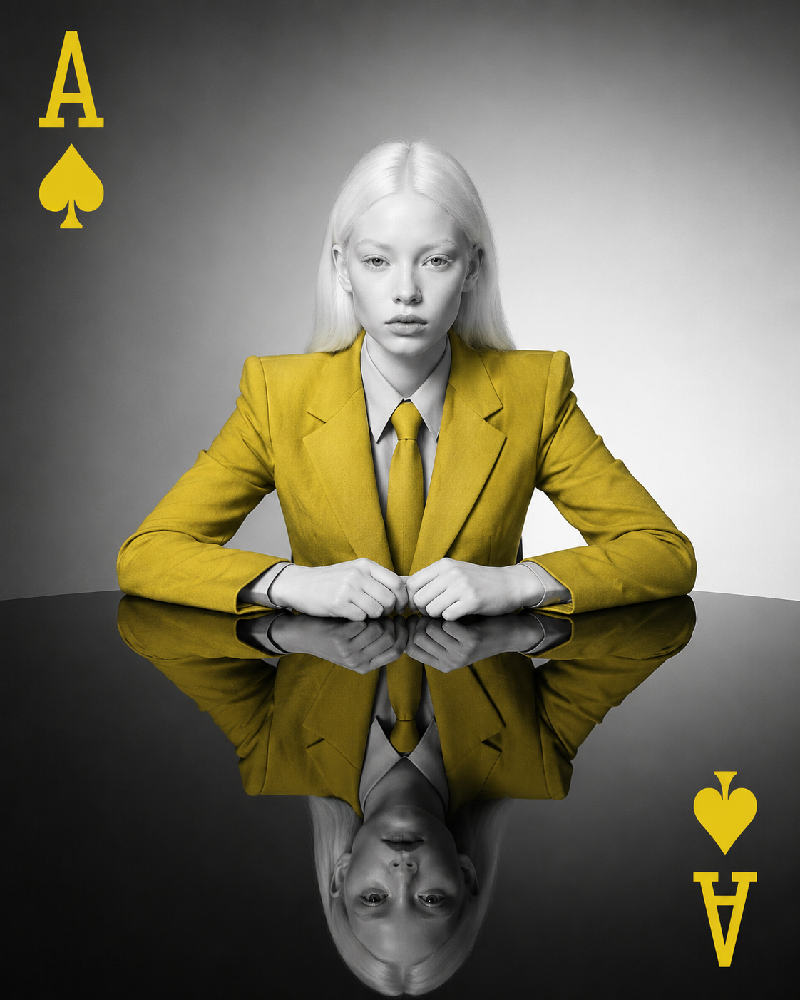

Um guia estratégico completo sobre como construir, gerenciar e medir sua presença e autoridade no ambiente digital.
Posicionamento digital é a percepção estratégica que uma marca, empresa ou pessoa constrói no ambiente online. Não se trata apenas de estar presente, mas de ser encontrado, reconhecido e lembrado da forma certa, pelo público certo, no momento certo.
É o conjunto de ações, narrativas e experiências que moldam como você é percebido digitalmente — diferenciando-o da concorrência e gerando valor real junto à audiência.
"Posicionamento digital não é sobre estar em todo lugar. É sobre estar no lugar certo, na hora certa, para a pessoa certa."
| Dimensão | Presença Digital | Posicionamento Digital |
|---|---|---|
| Foco | Existir online | Ser percebido estrategicamente |
| Ação | Criar perfis e canais | Construir autoridade e confiança |
| Resultado | Visibilidade | Diferenciação e preferência |
| Medida | Seguidores, acessos | Engajamento, conversão, lealdade |
| Exemplo | Ter um site | Ser referência no nicho |
A construção deliberada da imagem de um indivíduo como profissional. Envolve propósito, valores, voz e consistência visual-comunicativa.
A gestão da imagem de uma organização: missão, visão, valores e a experiência consistente que ela entrega em todos os pontos de contato digitais.
Compreender profundamente quem é o público-alvo — suas dores, desejos, comportamentos e onde consome conteúdo — é base do posicionamento eficaz.
O conjunto de percepções que o público tem baseado em avaliações, menções, comentários e comportamento da marca no ambiente digital.
Otimização para mecanismos de busca: como o conteúdo é estruturado para que o público certo encontre você organicamente quando busca por soluções.
A responsabilidade de gerir a imagem com transparência, respeito à privacidade do usuário e veracidade das informações publicadas e promovidas.

Estabelecer como a marca se comunica: formal, descontraída, inspiradora ou técnica. A consistência gera reconhecimento.
Planejar temas, formatos (reels, carrosséis, artigos, podcasts) e frequência para manter presença constante e relevante.
Publicar educação, entretenimento ou inspiração genuínos — não apenas promoção — para construir autoridade e confiança.
Humanizar a marca com histórias reais, bastidores e propósito. Pessoas se conectam com pessoas, não com logos.
Responder comentários, estimular conversas e criar senso de pertencimento ao redor da marca ou criador.
Estratégia de autopromover habilidades e expertise para conquistar oportunidades profissionais: LinkedIn ativo, portfólio digital, palestras online e publicações autorais.
Criadores com 1k–100k seguidores têm taxas de engajamento até 8x maiores que mega influenciadores. Nichos específicos geram conversão real.
Monitorar menções, responder crises publicamente com agilidade, incentivar avaliações positivas e construir ativos de reputação antes de precisar deles.
Quantas pessoas únicas tiveram contato com o conteúdo em determinado período
Taxa de interação: curtidas, comentários, salvamentos e compartilhamentos sobre o alcance
Proporção de visitantes que realizam a ação desejada (compra, cadastro, contato)
Análise do tom (positivo/negativo/neutro) das menções e comentários sobre a marca
| Etapa do Funil | Objetivo | Métricas Principais | Ferramentas |
|---|---|---|---|
| 🔍 Descoberta (Topo) | Atrair novos públicos | Alcance, Impressões, Tráfego orgânico | Google Analytics, Meta Insights |
| 💡 Consideração (Meio) | Gerar interesse e confiança | Taxa de engajamento, Tempo na página, Seguidores | HubSpot, Hootsuite |
| ✅ Decisão (Fundo) | Converter e fidelizar | Taxa de conversão, CPL, CAC, ROI | CRM, Google Ads |
| 🔄 Retenção (Pós) | Manter e transformar em promotores | NPS, LTV, Taxa de recompra, Reviews | Hotmart, RD Station |
Os Sistemas de Informação transformam dados dispersos em inteligência estratégica, permitindo decisões baseadas em evidências sobre conteúdo, canais e audiência.
Autor de "Isso é Marketing" e "Tribos". Defende o posicionamento baseado em permissão, nicho e mudança genuína — não interrupção.
Pioneiro na construção de marca pessoal via conteúdo massivo e autêntico. Defende "documentar ao invés de criar".
Fundador da Moz e SparkToro. Referência em SEO, marketing de conteúdo e compreensão da jornada de descoberta do cliente.
Co-autora de "Marketing 1to1". Pioneira no conceito de personalização e construção de relacionamento individual com o cliente digital.
Em "Marketing 5.0", aborda a fusão entre tecnologia e humanidade na construção de marcas relevantes na era digital.
Autor do "8Ps do Marketing Digital", referência brasileira em estratégias de posicionamento online para o mercado nacional.
IA está transformando a criação de conteúdo, personalização em escala e análise de audiência. Ferramentas como ChatGPT, Midjourney e sistemas de IA permitem que marcas produzam conteúdo mais rápido e personalizado — mas o diferencial continua sendo a voz e perspectiva humana autêntica.
Monitoramento em tempo real não apenas de menções diretas, mas de conversas relevantes ao redor do nicho. Permite identificar oportunidades, crises emergentes e necessidades não verbalizadas do público antes da concorrência.
A expectativa do usuário moderno é de experiências adaptadas ao seu comportamento e preferências individuais. Marcas que entregam conteúdo e comunicação sob medida em cada touchpoint digital constroem laços de lealdade muito mais fortes.
O poder se descentraliza das mídias tradicionais para criadores independentes e comunidades de nicho. Marcas que cocriam com criadores e investem em comunidades próprias (Discord, grupos, newsletters) constroem audiências mais engajadas e resilientes.
Com o fim dos cookies de terceiros e regulamentações como LGPD e GDPR, construir bases de dados próprias (emails, telefones, preferências) se torna vantagem competitiva. O posicionamento do futuro é construído com consentimento e transparência.
Gerir a imagem digital implica responsabilidade com o impacto que o conteúdo e as ações geram. A ética não é restrição — é vantagem competitiva sustentável.
Indicar claramente conteúdos patrocinados, parcerias comerciais e não enganar o público com promessas falsas.
Respeitar a LGPD, coletar dados com consentimento e tratar informações pessoais com responsabilidade.
Não propagar desinformação, não manipular métricas com seguidores falsos e apresentar resultados reais.
Construir posicionamento que reflita diversidade, respeite diferentes grupos e evite perpetuar estereótipos.
Uma visão integrada de todos os elementos que compõem uma estratégia de posicionamento digital sólida e sustentável.
Este trabalho integra o ciclo de seminários da disciplina Sistemas de Informações Gerenciais, orientado pelo Professor Dr. Arlindino Neto. — Universidade Federal da Bahia